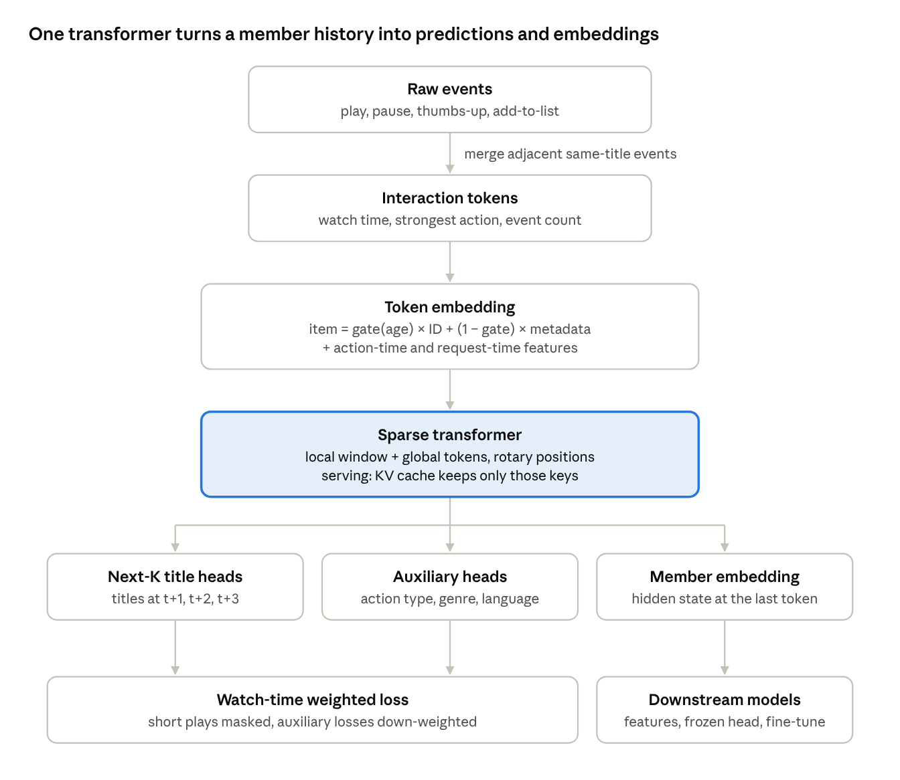

One model. Every member's full history. Many recommenders.
Netflix's bet is simple: instead of maintaining dozens of specialised models, train one large transformer on members' complete interaction histories and let every downstream system build on it.
This post walks through how I built each piece, what the code does, and what is still left to do.
Netflix's homepage is served by many specialised models: "Continue Watching", "Because you watched", search, notifications. Each one is trained separately, and each one re-learns the same thing: what this member likes.
Netflix's answer was to centralise that learning. A single foundation model reads a member's entire history and produces two things everyone can reuse: predictions of what comes next, and embeddings of members and titles.
The idea comes straight from LLMs. Treat each interaction as a token, train autoregressively on next-token prediction, and scale. Netflix reports that recommendation quality kept improving as they scaled the model, much like scaling laws in language modelling.
I wanted to understand every moving part of that recipe. So I built it.
Raw histories are noisy. A single evening with one show becomes play, pause, resume, pause again. Feeding every event to a transformer wastes context on repetition.
Netflix borrows the idea behind Byte Pair Encoding: merge adjacent events into one meaningful token. In netflix-fm, consecutive events on the same title within 30 minutes collapse into one token. That token keeps what matters:
On the synthetic dataset, 30,468 raw events became 12,132 tokens. That is 2.5x more history in the same context window.
Each token carries action-time features: what happened (title, action, device, watch-time bucket, time since the last token, hour of day).
It also carries request-time features: the device, locale and hour of the next request. These are known when the model is called, and they matter. What someone watches on a phone at 8 a.m. differs from what they watch on a TV at 9 p.m.
Code: data/tokenizer.py, data/dataset.py.

Under the hood, netflix-fm is a decoder-only transformer, like GPT, with three changes for recommendation.
Sparse attention for long histories. A member can have thousands of tokens. Each position attends to a local window of recent tokens plus a few global tokens at the start of the sequence. Rotary position embeddings keep relative order. Long histories are cut into overlapping windows during training, so every part of a history gets seen.
Predict further than the next click. Next-token prediction alone rewards short-term behaviour. Following Netflix, the model predicts the next three titles at once, which pushes it toward longer-term interests. Auxiliary heads predict the next action type, genre and language: cheap, dense signals that make the representation richer.
Not every watch counts the same. A two-hour film watched to the end says more than a 30-second sample. Each target is weighted by log watch minutes, and plays under a minute are masked out entirely.
Code: model/attention.py, model/heads.py, training/losses.py.
Netflix launches new titles constantly. An ID embedding learned from watches is useless for a title nobody has watched yet. That is the cold-start problem.
netflix-fm gives every title two representations:
A learned gate, conditioned on the title's age, blends the two. Young titles lean on metadata. As a title matures, the gate shifts weight to its ID embedding.
Retraining from scratch every time the catalog grows is expensive. Netflix fine-tunes incrementally, and so does netflix-fm. The new model inherits every weight from the last checkpoint. Rows for newly launched titles start from the average embedding of existing titles with the same genre and language, plus a little noise.
Code: model/embeddings.py, training/incremental.py.
Recommendations must update as a member interacts. Re-encoding a full history on every click is too slow.
netflix-fm encodes a member's history once, then caches the attention keys and values. Each new interaction costs a single-token forward pass. Because attention is sparse, keys outside the window that are not global tokens can never be attended to again, so the cache evicts them. Memory per member stays fixed at window + global tokens (68 with the default config), however long the history grows.
A test checks that this cached, step-by-step path produces the same member embedding as a full forward pass.
Downstream teams store foundation-model embeddings as features. But every retrain produces a new, arbitrarily rotated embedding space, which would silently break them.
netflix-fm aligns each new space to the previous one with an orthogonal Procrustes rotation, fitted on titles present in both. Distances inside the new space don't change, but vectors stay comparable to last month's.
Code: inference/predictor.py, inference/embeddings.py, downstream/fine_tune.py.
The whole pipeline runs on a laptop CPU. It generates a synthetic catalog and member histories, tokenizes them, trains, and saves a checkpoint.
git clone https://github.com/avinashbarnwal/foundational-llm-model.git
cd foundational-llm-model/netflix
python3 -m venv .venv && .venv/bin/pip install -e ".[dev]"
.venv/bin/python -m pytest -q
.venv/bin/python scripts/train.py --config configs/default.yaml
With the default config:
A note on results: on synthetic data the item loss starts at the uniform baseline (ln 10,001 ≈ 9.21) and only begins to move in two epochs. These numbers show the pipeline works, not that it recommends well. Real interaction data is the next step.
This is version one. Next up:
If you build recommenders, I'd love to hear what you would add.
netflix/ folder.